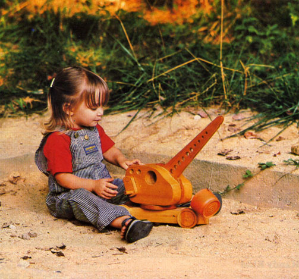
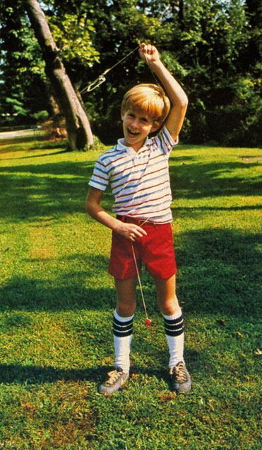
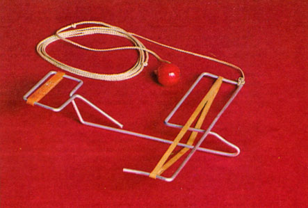
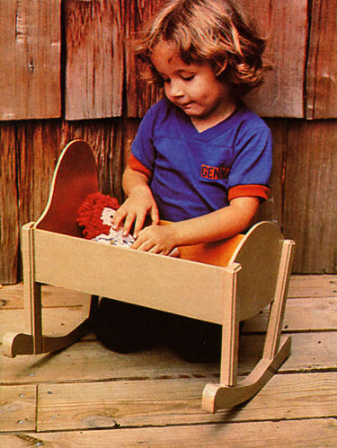

The holiday season's here again, and that means it's time to start figuring how to be sure there are toys under the tree come Christmas morn! But there's no need to sabotage your savings account (if you're one of the lucky folks who still have one) for a passel of fancy storebought amusements. Mother's workshop elves have been busy cobbling up a few goodies for their youngsters . . . and you can duplicate those efforts by referring to the dimensions provided on the accompanying grid diagrams, and following the suggestions given in our descriptions of each toy. We think you'll agree that these playthings are sturdy and easy to assemble. Perhaps best of all, they can provide you with the satisfaction of a job well done . . . and your children with the pleasure that comes from being able to say, "Mom (or Dad) made this for me!"
The cab of our handcranked crane is formed by sandwiching a boom (cut from 1 X 6 pine) between two pieces of 2 X 6. A cardboard template will, of course, allow you to trace the proper shape on each section of wood so that you can cut it out with a coping or band saw.
Before joining the three pieces, be sure to drill the series of 1/2" and 3/8" holes in the boom (plus the 1/8" nose hole and a guide slot), as well as the 9/16" and 1-3/4" openings in the cab's sides. Then you can go on to yellow-glue-and finish-nail-the parts together.
The crane's chassis, too, is best formed by using a template. Once that base is complete, you can bore two 9/16" axle holes and a 1-1/16" pivot sleeve through it.
To assemble the components, simply glue and nail the round platform to the cab-and-boom assembly, bore a 1" hole into both, and glue the pivot pin in place. Then, once you've slipped the shaft into its chassis sleeve, a short 1/8" dowel, pressed through a hole at the end of the pin, will keep everything together.
The wheels are cemented to 4-1/2" axles made from 1/2" dowel . . . and finally, the crank-which uses a 1-1/2" and a 4-1/2" length of 1/2" dowel-can be assembled, inserted, and wrapped with a hook-ended string. To keep the crank dowel in place, groove it as shown .. . bore a 1/4" hole through the end of the cab . . . and drive a 1/4" X 3/4" dowel pin into the opening and lightly against the niche.
Click here to link to downloadable construction details.
Like the traditional bull roarer, the little gadget is made to be swung around in a circle on a tether. The wind passing over rubber bands on its wings and tail produces an impressive scream. To make the toy, take a section of 1/8" copper-coated welding rod (it comes in 36" lengths) and a pair of broad-nosed pliers, and simply bend the "airframe" to the configuration shown in the photo, using our grid diagram as a dimension guide. (Trim off the metal-3 inches or so-that's left.)
Once you've completed the frame, stretch a wide rubber band across the wings and another over the tail. Then tie about 5 feet of cord to the front corner of the craft's left wing, and a wooden bead to the string's free end. Your plane is ready to take to the sky.
Be sure your children understand, however, that the flier can cause injury if it strikes a bystander . . . and that their aerobatic antics should be limited to open, outdoor areas.
Click here to link to downloadable construction details.
Here's a toy that you're almost certain to be able to fashion from shop scraps. First, fabricate the necessary cardboard templates, using our grid drawings as a reference. Then, after you've traced the outlines on appropriate pieces of wood, cut those boards to shape. (You can flute the bedposts' corners with a router if you wish.)
Half-lap the 65 degree joints between the legs and the rockers, cut a 1/4" X 13/16" rabbet-4-1/8" long-into the upper inside edges of each upright, and glue the joints together. When they've dried, cement the bottom boards in place . . . then glue (and brad) the side and end panels in their proper positions.
Finish up by painting or staining the wee bed to suit your taste.
Click here to link to downloadable construction details.
|
 Wooden boom crane - see text for downloadable construction details. |
 Have fun with this easy to make buzz bomber. |
 Buzz bomber - see text for downloadable construction details. |
|
 Wooden doll cradle - see text for downloadable construction details. |
|
|